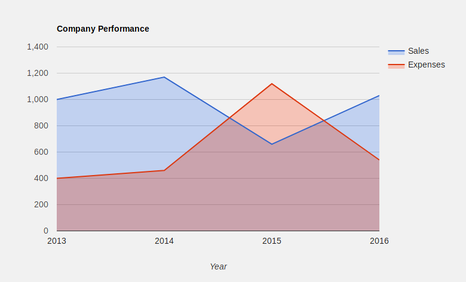

Profil
-
person
Thierry
-
person
Fantomas
-
mail
thierry.fantomas@gmail.com
-
phone
04.72.00.00.00
Ses fermes préférées
 |
La ferme du Pont | les haricots sont top |
|
A la Ferme | prendre les pommes |
|
La ferme du baudet | beaucoup de variétés de tomates |
Ses dernières visites
